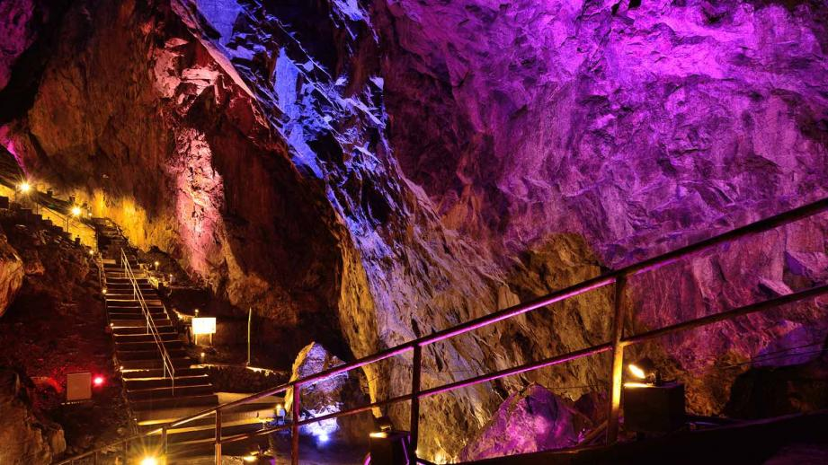
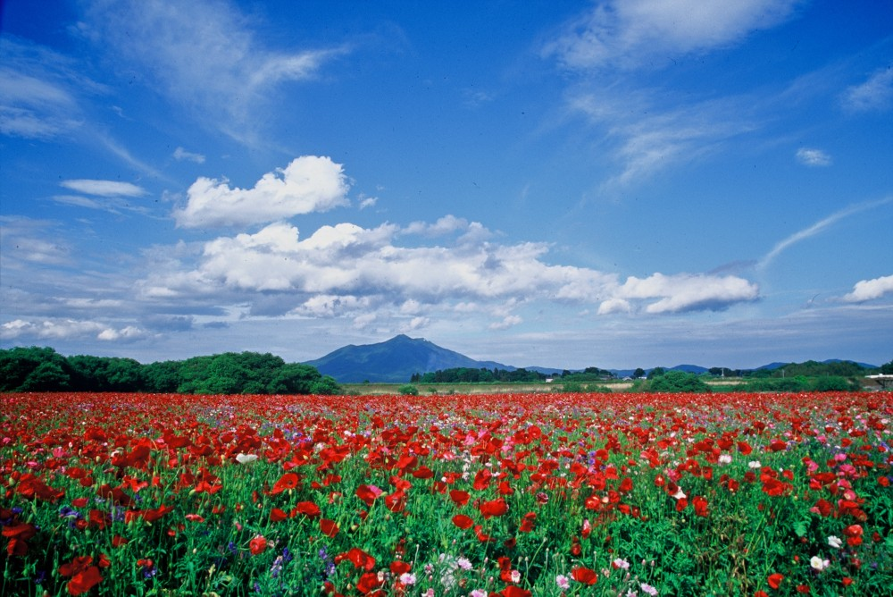

日原鍾乳洞
東京最大級の鍾乳洞であり、夏でも涼しく自然を体験できます。自分は夏に行ったんですが涼しくて快適でした。

よこはまコスモワールド
みなとみらいを代表する都市型遊園地です。去年ここで友達と一日中遊び疲れ果ててました。

小貝川ふれあい公園
ポピーやコスモスが有名な自然豊かな公園です。花が好きな友達との付き合いで行ってみたのですがとてもきれいでした。
RESASの人流データを参考にした観光スポット紹介
自分が行ったことある魅力があるところをまとめました！その後調べ作業をし、厳選した3つを紹介します！

東京最大級の鍾乳洞であり、夏でも涼しく自然を体験できます。自分は夏に行ったんですが涼しくて快適でした。
みなとみらいを代表する都市型遊園地です。去年ここで友達と一日中遊び疲れ果ててました。

ポピーやコスモスが有名な自然豊かな公園です。花が好きな友達との付き合いで行ってみたのですがとてもきれいでした。